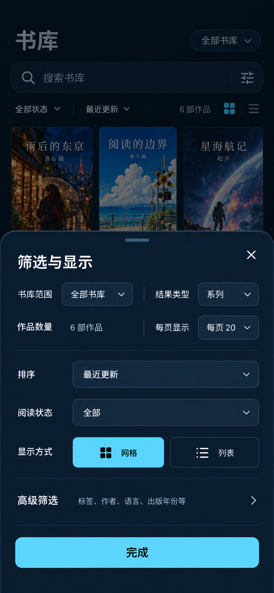
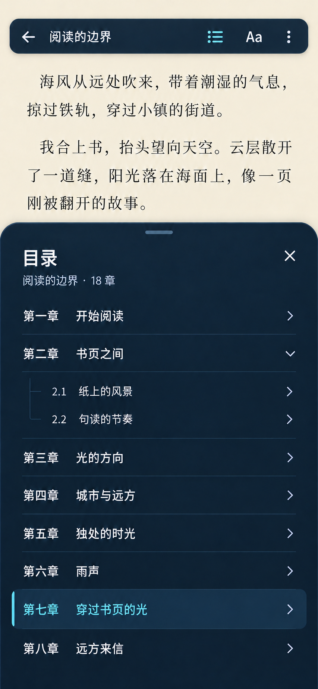
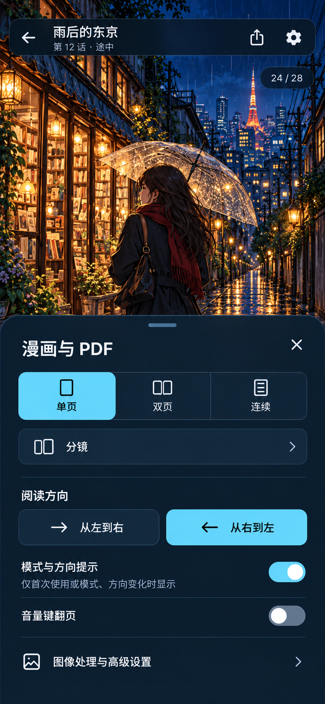
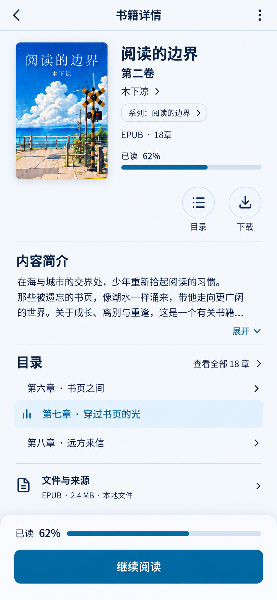
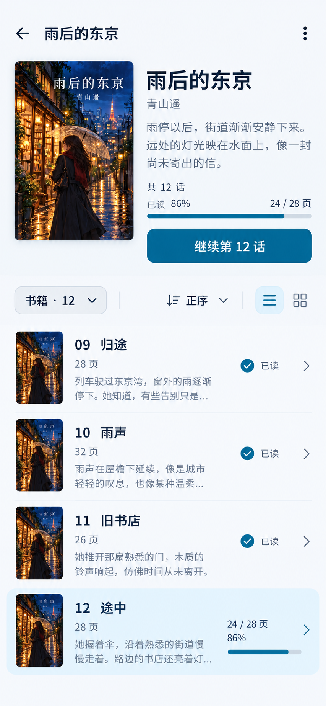
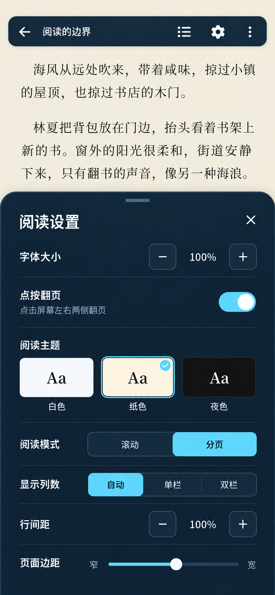
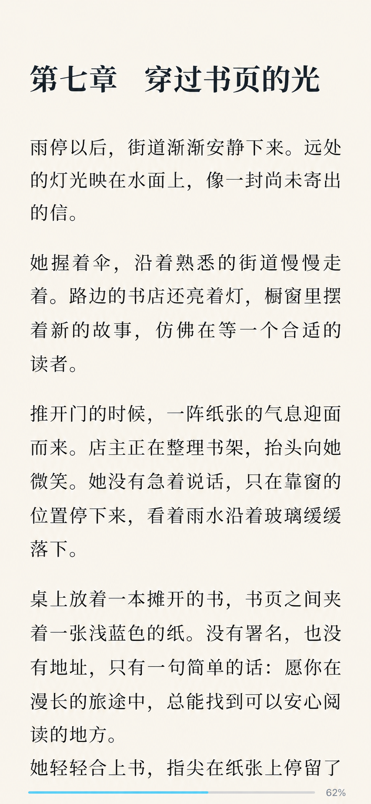
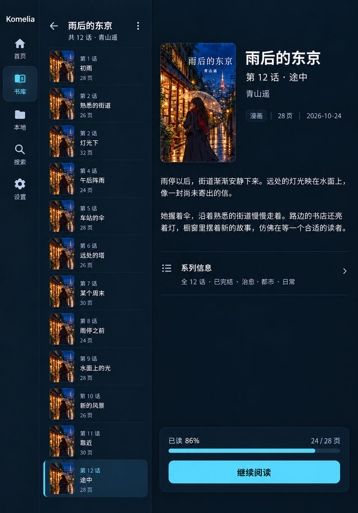
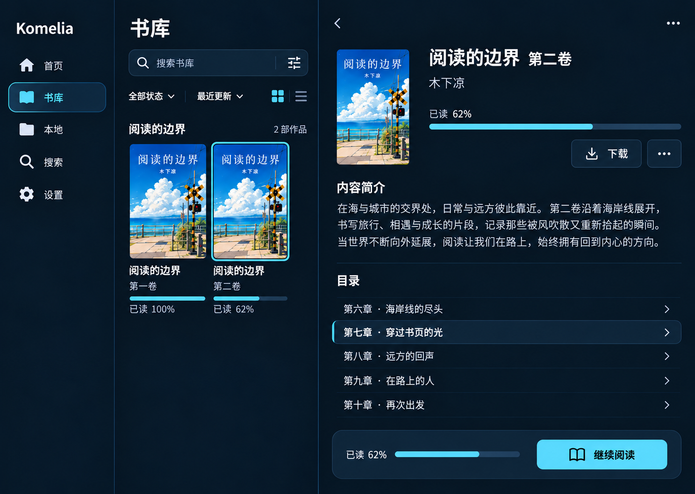

01 · 首页
01 · 首页 02 · 书库
02 · 书库 03 · 丛书卷册
03 · 丛书卷册 04 · 文字书详情
04 · 文字书详情 05 · 漫画单册详情
05 · 漫画单册详情 06 · 本地与下载07 · 搜索结果
06 · 本地与下载07 · 搜索结果 08 · 设置首页
08 · 设置首页
09 · 筛选与显示
10 · EPUB 目录 11 · 文字阅读设置 · TTU
11 · 文字阅读设置 · TTU
12 · 漫画与 PDF 设置
13 · 文字书详情 · 浅色
14 · 丛书卷册 · 浅色
17 · Komga EPUB 设置
18 · 纯阅读状态平板与桌面

15 · 平板适配
16 · 桌面适配页面为设计示例。完整 PNG、目标尺寸、实际像素与交互说明见逐页浏览页；静态图不作为应用实现或验收证据。